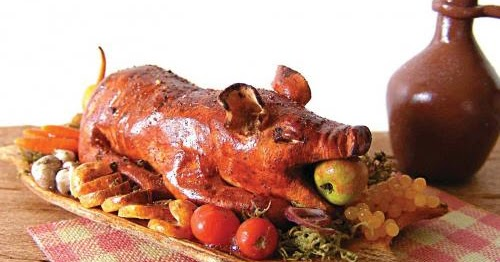
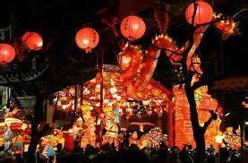
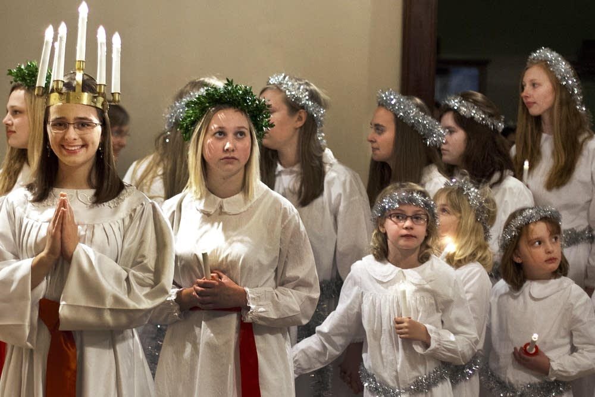
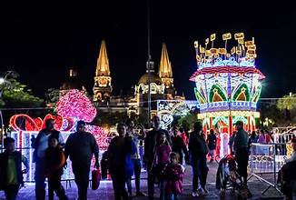
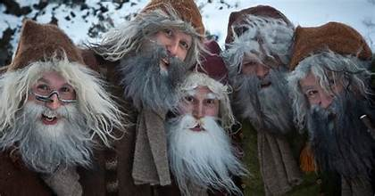
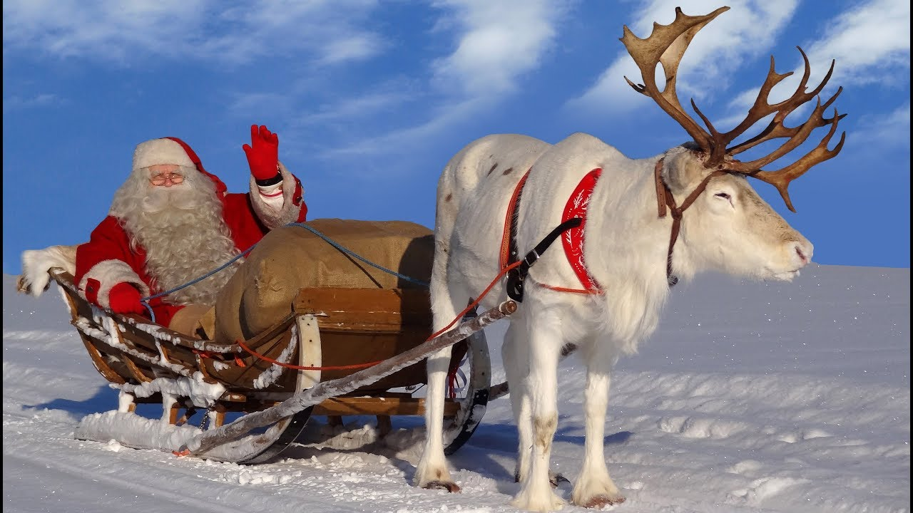
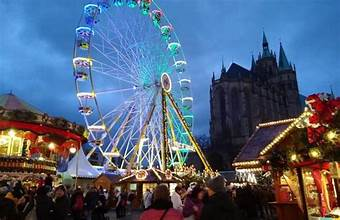
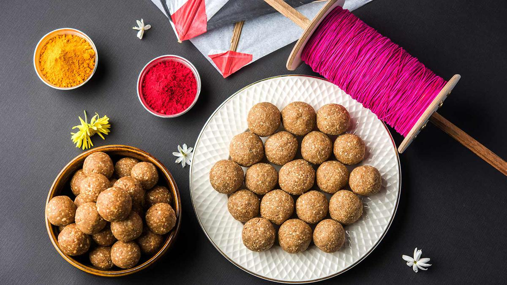
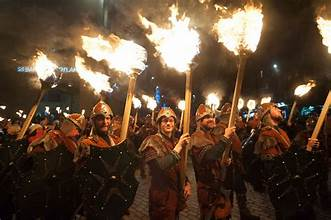
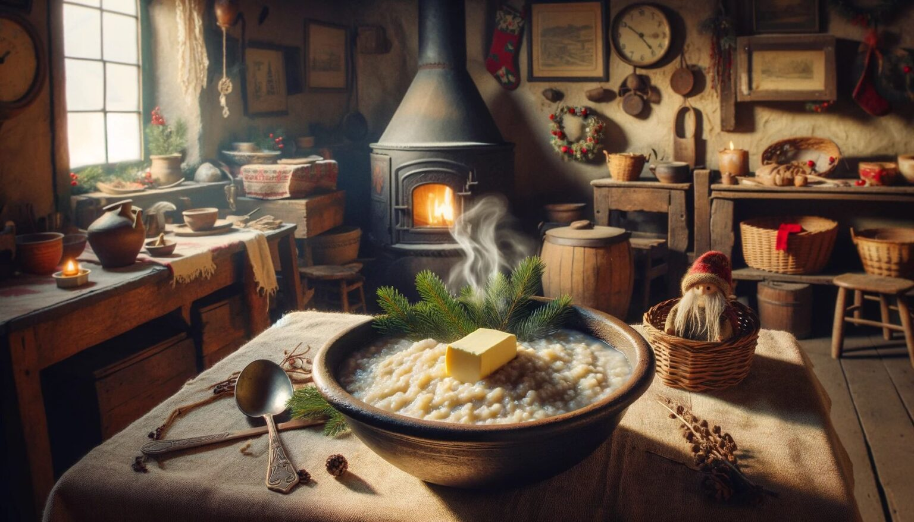

სანამ საათი ახალ წელს ჩამოჰკრავდა, აჭარაში სახლის მისაღებ ოთახში ფერადი ბაფთებით მორთული მამალი ცხვარი შეჰყავდათ.
ეს ხვავისა და ბარაქის სიმბოლო იყო.ახალი წლის პირველივე წუთებში ოჯახის უფროსი გარეთ
გადიოდა და თოფს ისროდა, როგორც სიცოცხლის გაგრძელებისა და სიხარულის სიმბოლოს.
ამ დროს ოჯახის დიასახლისი წითელ კაბას იცვამდა და სახლის ყველა ოთახში შაქარში არეულ ბრინჯს აბნევდა,
დამდეგ წელს ოჯახს სიტკბო და სიუხვე რომ დაჰბედებოდა. დილით ოჯახის უფროსი ბოსელში ჩადიოდა და რკინის ჯაჭვს გაათრევდა,
რომ საქონელიც მრავლად ჰყოლოდათ. დიასახლისი კი ეზოდან სახლში წყლით სავსე დოქს შეიტანდა და ოთახებს მოაპკურებდა.
როგორც ახალი, ისე ძველით ახალი წელი წარმოუდგენელი იყო მეკვლის გარეშე.
მეკვლე, რომელსაც აჭარაში მფერხავს უწოდებენ, ის ადამიანია, ვისაც მასპინძელი ოჯახი ენდობა და განსაკუთრებული კეთილგანწყობით ეპყრობა.
სწორედ ასეთ ადამიანს ირჩევდნენ ახალი წლის პირველ სტუმრად ოჯახში და განსაკუთრებულ დახვედრას უწყობდნენ.
თავის მხრივ, მეკვლეც ხელდამშვენებული მიდიოდა ოჯახში, რომ იქაურებს ხვავი და ბარაქა დაჰბედებოდათ.
მეკვლეს ოჯახის უფროსი ტკბილეულით ეგებებოდა კარში და პირს გოზინაყით ჩაუტკბარუნებდა.
მიიჩნეოდა, რომ დამდეგ წელს ოჯახის კეთილდღეობა მეკვლის „კარგ ფეხზე“ იყო დამოკიდებული,
ამიტომ, დიდ პატივთან ერთად, მეკვლეობა დიდი პასუხისმგებლობაც იყო.
მეკვლის ტრადიცია საქართველოში დღემდე შენარჩუნებულია.
Oshogatsu is Japan’s most important holiday, celebrated with family gatherings, special foods
like osechi (traditional dishes), and visiting shrines. Many clean their homes before the New Year
to welcome good spirits, and people send New Year’s cards. The first shrine visit of the year, “hatsumode,” is a key tradition.
On December 13th, Sweden celebrates St. Lucia Day, honoring the patron saint of light.
Girls dress in white robes, wearing candles in their hair, while boys don star-shaped hats.
They sing traditional songs to bring light and warmth during the darkest days of winter.
Las Posadas is a nine-day Mexican tradition held from December 16-24. Families reenact Mary
and Joseph’s search for shelter, going door to door in a procession. The evening ends with
music, piñatas, and festive foods like tamales and ponche, a warm fruit punch.
In Iceland, the Yule Lads are mischievous figures who visit children during the 13 days leading
up to Christmas. Each night, children leave shoes out for the Yule Lads to fill with small gifts or
candy. The tradition is based on folklore, and each Yule Lad has a unique characteristic, like stealing food or causing mischief.
In Finland, Joulupukki, or Finnish Santa Claus, is said to live in the Lapland region. On Christmas
Eve, children eagerly await his visit, believing he arrives to deliver presents. Finnish traditions
also include feasts with dishes like ham, casseroles, and rye bread. The sauna is an important part of Christmas Eve celebrations as well.
Germany is known for its Christmas markets, where festive stalls sell handcrafted goods, mulled
wine, and roasted chestnuts. Families also use Advent calendars to count down the days until
Christmas, with a small gift or chocolate behind each door.
Makar Sankranti, celebrated in January, marks the transition of the sun into the zodiac sign of
Capricorn. In India, it’s a time for flying kites, taking holy dips in rivers, and sharing sweets made
of sesame seeds and jaggery. The festival symbolizes the end of winter and the arrival of the harvest season.
Hogmanay, Scotland’s New Year celebration, is marked by torchlight processions, singing "Auld
Lang Syne," and the famous first-footing tradition. The first person to enter a home after
midnight should bring gifts like coal or whiskey for good luck.
In Norway, the mythical Julenisse (Christmas elf) is believed to visit homes during Christmas,
leaving gifts for children. The tradition includes a Christmas Eve feast with dishes like ribbe
(roast pork) and risengrynsgrøt (rice porridge).
